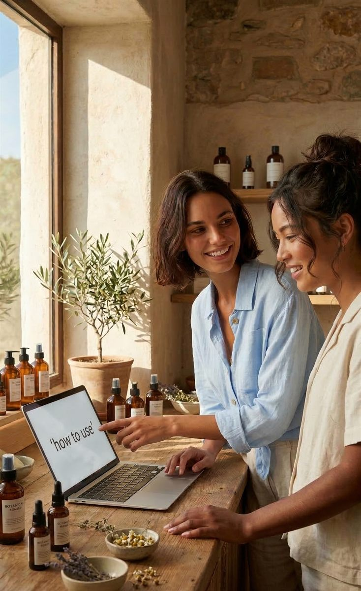
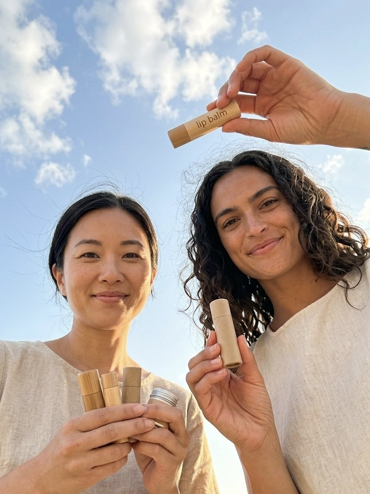
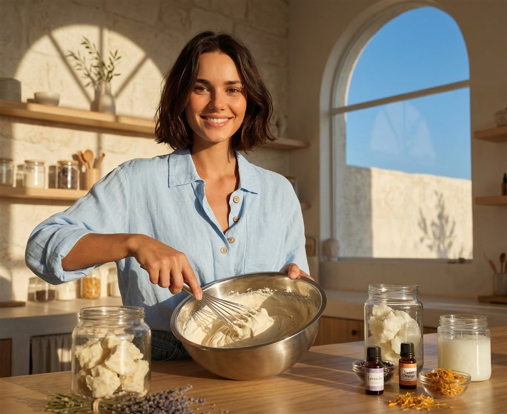

Eight hours at a laptop, then two more on your phone before bed.
Made for Curious.
Your skin. Your ritual. Your recipe.
What is ARK Experience
Most of us spend the day staring at a screen
 
Every guide teaches the science in plain language, then hands you a tested formula. You don't need craft skills or a chemistry degree. It's a fun, practical way to spend an evening, with something you made to show for it.
More about ARK Experience →Sound familiar?
Another evening lost to the scroll?
Your hands have been on a keyboard or a phone all day. They're ready to make something.
You want a hobby that's actually useful, not one more thing collecting dust.
You'd love to know what's really in the products you use every day.
You tried a DIY recipe online once. Nobody explained why it didn't work.
The ARKE way
Put the phone down. Learn a skill you'll use every day.
On their own
ingredients.
Together
a ritual.
Every guide explains what each ingredient does and why it's there. An evening of making turns into a skill you keep and gifts your family and friends will actually use.
Free guides
Start making. Start understanding.
Two free guides to begin with. Instant PDF and yours to keep, with no subscription, app or account.
Browse all guides →
Guide 01
Free Guide
Beginner's Guide to Natural Body Care
Learn to read labels, understand what's in your products and spot greenwashing. Then take your first confident step into making your own.
Guide 02
Free Guide
Making Natural Lip Balm at Home
One tested formula, explained ingredient by ingredient. Twenty minutes of your time gives you twenty tubes of lip balm and the know-how to customize it.
Go deeper
4 paid guides
Deodorant, shampoo bars, body butter & oil infusions
Four in-depth guides with one tested formula each, explained ingredient by ingredient with the full method. Instant PDF, one-time payment and yours to keep.
How it works
From download to first batch.
Download the guide
Leave your email and the PDF arrives in your inbox right away. It's yours to keep, with no subscription, app or account.
Understand the why
Every ingredient is explained in plain language. You'll learn what it does, why it's there and what happens if you change it.
Make your batch
Follow a tested formula step by step. You don't need craft skills, just a thermometer and a scale. Then use it, gift it and share it with the people you love.
In the lab
What you'll learn to make.
Five guides and five things to make with your own hands. Each one is tested and used daily in Phuket's heat, then explained ingredient by ingredient. Tap a card to explore.
Free guide
Lip balm
Six ingredients. Twenty minutes. Twenty tubes.
Paid guide
Deodorant
The formula I reach for every morning.
Paid guide
Shampoo bars
Rosemary and calendula. Not soap.
Paid guide
Whipped body butter
Whipped until it's light as a cloud.
Paid guide
Oil infusions
Botanicals infused into oil, for hair and body.
Hi, I'm

Yana.
I'm a Marketing and Automation Lead, and I work in front of a screen all day. A few years ago I craved something tactile, something I could make with my own hands. That curiosity led me from a candle and soap workshop in Bangkok to formulating natural body care that I, my friends and my family now use every single day.
ARK Experience is where I share what I've learned. These are formulas tested in my own kitchen and explained the way I wish someone had explained them to me.
Read the full story →The best skincare is the kind you understand.
Start with the free guide.
The Beginner's Guide to Natural Body Care has 16 pages on reading labels, understanding ingredients and taking your first step into making your own. Instant PDF, straight to your inbox.
It's on its way. Check your inbox ✦
Free PDF · No spam, ever · Unsubscribe anytime
Your first batch doesn't have to be perfect.
It just has to be yours and safe.
Get the Free Guide →